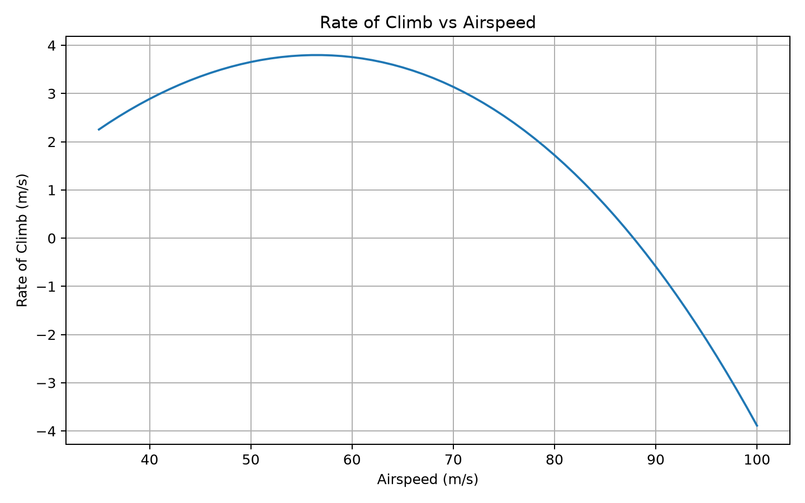
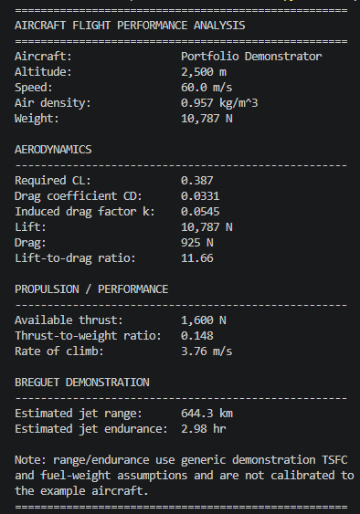
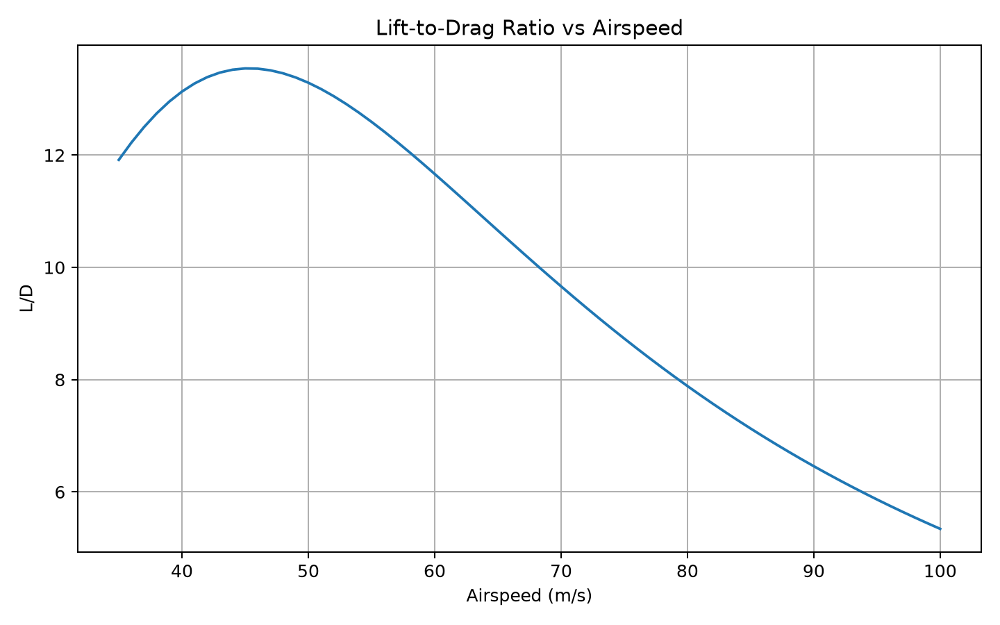
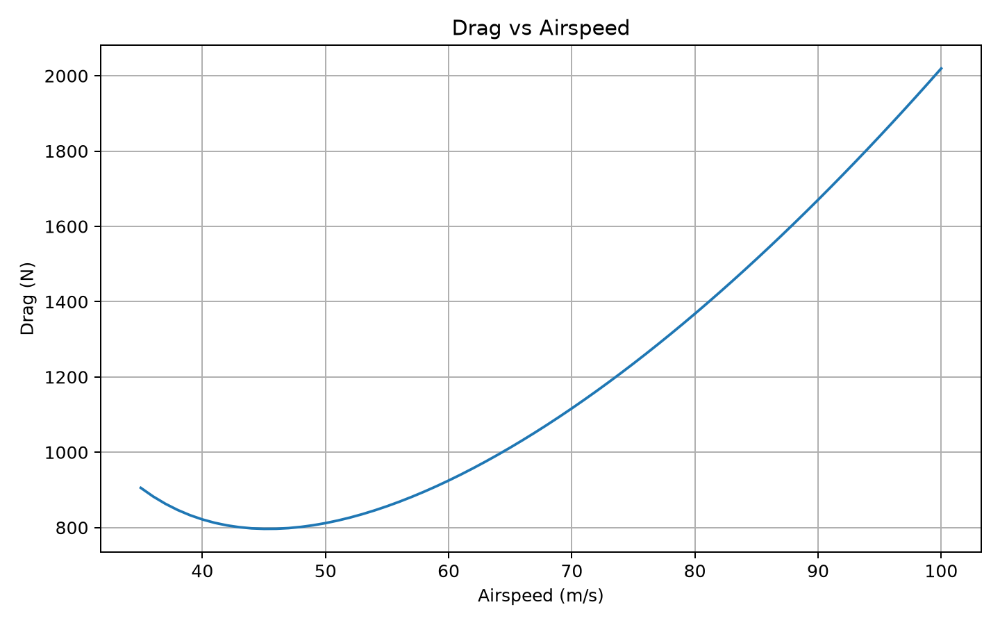
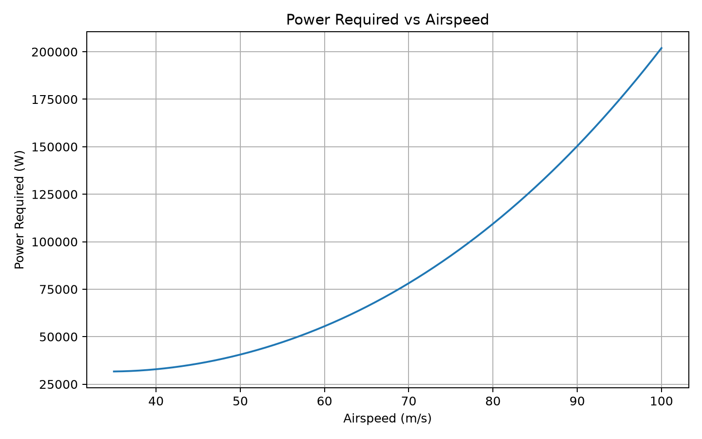
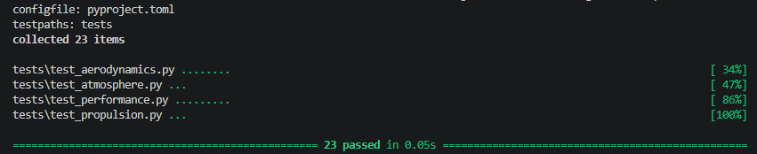

01
Rate of climb
Climb performance reaches a clear peak before falling off as drag grows at higher airspeed.
I’m a Computer Science student at Georgia State University. I’m interested in projects where I can learn something challenging, build it, and see how it holds up in the real world.
PYTHON / AEROSPACE / 2026
I built this because I wanted to take aircraft performance equations I had been learning about and actually connect them in code. Instead of treating lift, drag, climb, range, and endurance as separate calculations, I wanted to see how they interacted when the flight condition changed.
23 tests passing · 4 generated plots · 5 core modules
VIEW REPOSITORYI started with the basic level-flight relationships and built outward from there. Airspeed and altitude determine the atmospheric condition and dynamic pressure. From that, the model solves for the lift coefficient needed to support the aircraft, estimates drag, and then uses the resulting forces to calculate power and climb performance.
I initially thought the individual equations would be the difficult part. The more interesting part ended up being making sure they worked together consistently when the airspeed changed.
The calculator is split into five core modules instead of keeping every calculation in one file.
Splitting the calculations into modules happened after I had the basic model working. It made the code much easier to test and extend.
Air density 0.957 kg/m³
Aircraft weight 10,787 N
Required CL 0.387
Drag coefficient 0.0331

Looking at one calculation is useful, but sweeping through airspeed made the relationships much easier to understand. The plots were where the model stopped feeling like a group of separate equations and started behaving like one system.

Climb performance reaches a clear peak before falling off as drag grows at higher airspeed.
This was where aerodynamic efficiency stopped feeling abstract. The curve shows a clear speed region where L/D is highest.


Total drag reaches a minimum in the mid-speed range, then rises as airspeed increases.
Power required rises quickly at higher airspeed as the drag force increases.

tests passing
I did not want the calculator to only return numbers that looked reasonable. The tests also check whether the physical relationships move in the direction they should.
density decreases with altitude ✓
lift equals weight in level flight ✓
thrust = drag gives zero climb ✓
more thrust increases climb rate ✓
better L/D increases estimated range ✓

I kept the first version focused on classical subsonic fixed-wing performance so I could understand and test the underlying relationships before making the model more complicated.
The core model is working. These are the directions I want to take it next.
PROJECT 02 · ASTRONOMY + DATA
TESS Exoplanet Transit Detector
I wanted to see if I could take real telescope data and recover the tiny, repeating drop in brightness caused by a planet crossing its star.
Python · Lightkurve · Astropy · NASA MAST · TESS
When a planet passes between us and its star, some of the starlight is blocked. The change can be tiny, but if the same dip keeps showing up on a regular schedule, there may be something orbiting the star.
NASA's TESS mission has already collected this brightness data, so I could work directly with public light curves instead of telescope images.
I started with a single TESS observation from a known exoplanet system. The data had thousands of measurements, gaps, spikes, and changes in noise. There was no obvious clean transit sitting in the middle of the graph.
The raw measurements were around 1.46 million electrons per second. I normalized the light curve so the star's normal brightness sits around 1.000, then flattened slower trends so short transit-like dips would be easier to isolate.
I used Box Least Squares to test 10,000 candidate periods between one and ten days. For each period, the algorithm checks whether the brightness measurements line up with a repeating transit-shaped drop.
10,000 periods tested
1 → 10 days searched
pending strongest signal
Before using the detector on unfamiliar stars, I wanted to see if it could recover a planet whose period was already known. That gave me an answer key and a way to check whether the pipeline was actually doing something useful.
A strong BLS peak by itself is not enough. The detected period still has to produce a convincing repeated transit when the data is phase folded.
MY DETECTOR pending
PUBLISHED pending
PERIOD ERROR pending
A transit detector is not very interesting if I only show the signals that worked. I am keeping track of every target I analyze, including signals that looked promising and later failed validation.
STARS ANALYZED 000
SIGNALS FLAGGED 000
REJECTED 000
VALIDATED 000
NEW PLANETS CLAIMED 000
No rejected candidates logged yet.
Python
Lightkurve
Astropy
NumPy
Matplotlib
NASA MAST
TESS
The code queries the archive, removes unusable measurements, normalizes and flattens the data, runs the BLS search, phase folds the strongest period, and leaves room for candidate scoring and validation checks as I expand the project.
I expected the interesting part to be the transit itself. Instead, most of the work was deciding which parts of the signal were actually worth trusting.
Noise, gaps, and strong-looking periodic peaks can all make a result look more convincing than it really is.
The first version proves that I can retrieve TESS data, process a light curve, and search for a repeating signal. Next I want to run the same pipeline across more targets, rank the candidates, and keep track of which signals survive validation.
Data: NASA TESS / MAST
Analysis: Python / Lightkurve / Astropy
Status: active development
PROJECT
This project is still under construction.